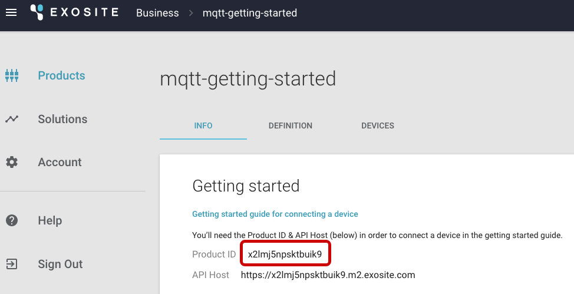
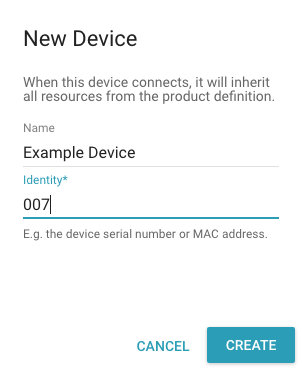
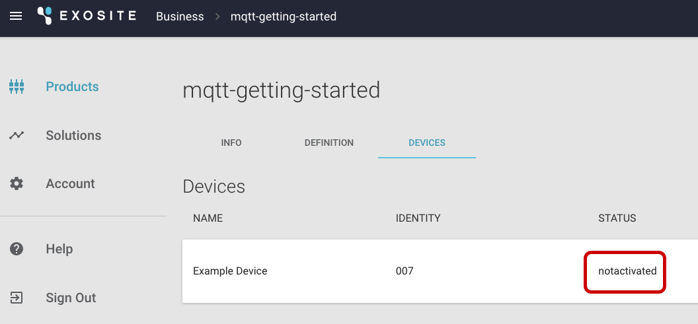
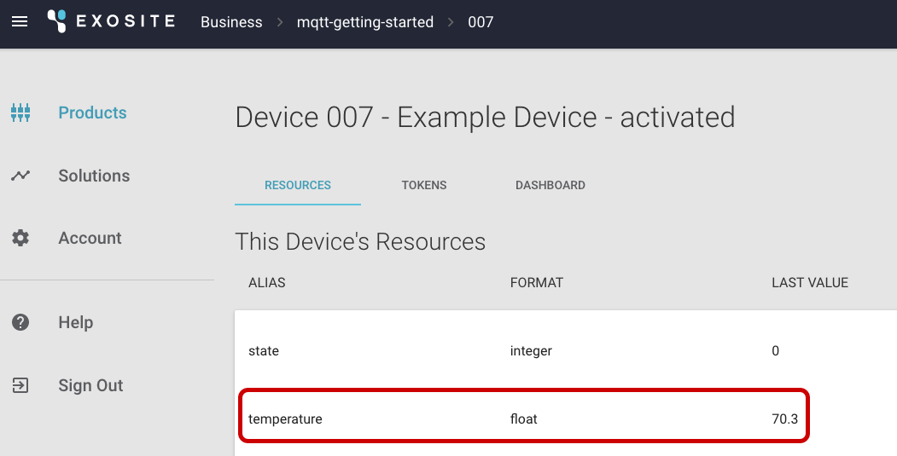

Getting-started Guide: MQTT
In this guide, you will enable MQTT for your product. You will then activate your device and connect your activated device with the Murano MQTT endpoint.
Requirements
Hardware Setup
No hardware is required to complete this guide.
Software Setup
To complete this guide, you must first download and install Python 3.5 from the Python website.
Overview
Exosite’s MQTT offering supports bi-directional device communication with the Murano Platform using the MQTT protocol. Devices can activate with the Murano Platform, can publish device data to its resources in Murano, and can subscribe to changes made to these resources.
Communication between the device and the Murano MQTT endpoint is secured by SSL and made available on port 8883. Note that Exosite uses SNI. MQTT client libraries are required to support SNI.
Anonymous access is provided only to facilitate device activation. The activation process supplies the device with the credentials necessary to authenticate in future sessions. Access control, by default, limits activated devices to publish/subscribe only to the device’s own resources. Anonymous clients, in contrast, can only publish to an activation endpoint and can only subscribe to that endpoint’s activation reply topic, which is unique to each activation request.
For information about the MQTT protocol, see http://mqtt.org/.
Getting Started
MQTT client libraries are readily available. Exosite requires that the library supports TLS and requires that the TLS support includes SNI. Contact Exosite if a preferred library fails either criteria. The Eclipse Paho™ MQTT Python Client is used in the examples below.
Enable MQTT for Your Product
Contact Exosite to have MQTT enabled for your product. Exosite will request your Product ID, which is available on the INFO tab of your product:

Activate Your Device
Create a device if you have not already done so.
Navigate to the DEVICES tab of your product and click the "NEW DEVICE" button:

Provide an Identity and, optionally, a Name, and click "CREATE":

The DEVICES tab will list the newly-created device and indicate its status is "notactivated."

Install a patched version of the Eclipse Paho™ MQTT Python Client via the following command:
$ pip install git+https://github.com/exosite/paho.mqtt.python.git@openssl_sni_supportSave the following certificate into a file called "trusted.crt":
-----BEGIN CERTIFICATE----- MIIDVDCCAjygAwIBAgIDAjRWMA0GCSqGSIb3DQEBBQUAMEIxCzAJBgNVBAYTAlVT MRYwFAYDVQQKEw1HZW9UcnVzdCBJbmMuMRswGQYDVQQDExJHZW9UcnVzdCBHbG9i YWwgQ0EwHhcNMDIwNTIxMDQwMDAwWhcNMjIwNTIxMDQwMDAwWjBCMQswCQYDVQQG EwJVUzEWMBQGA1UEChMNR2VvVHJ1c3QgSW5jLjEbMBkGA1UEAxMSR2VvVHJ1c3Qg R2xvYmFsIENBMIIBIjANBgkqhkiG9w0BAQEFAAOCAQ8AMIIBCgKCAQEA2swYYzD9 9BcjGlZ+W988bDjkcbd4kdS8odhM+KhDtgPpTSEHCIjaWC9mOSm9BXiLnTjoBbdq fnGk5sRgprDvgOSJKA+eJdbtg/OtppHHmMlCGDUUna2YRpIuT8rxh0PBFpVXLVDv iS2Aelet8u5fa9IAjbkU+BQVNdnARqN7csiRv8lVK83Qlz6cJmTM386DGXHKTubU 1XupGc1V3sjs0l44U+VcT4wt/lAjNvxm5suOpDkZALeVAjmRCw7+OC7RHQWa9k0+ bw8HHa8sHo9gOeL6NlMTOdReJivbPagUvTLrGAMoUgRx5aszPeE4uwc2hGKceeoW MPRfwCvocWvk+QIDAQABo1MwUTAPBgNVHRMBAf8EBTADAQH/MB0GA1UdDgQWBBTA ephojYn7qwVkDBF9qn1luMrMTjAfBgNVHSMEGDAWgBTAephojYn7qwVkDBF9qn1l uMrMTjANBgkqhkiG9w0BAQUFAAOCAQEANeMpauUvXVSOKVCUn5kaFOSPeCpilKIn Z57QzxpeR+nBsqTP3UEaBU6bS+5Kb1VSsyShNwrrZHYqLizz/Tt1kL/6cdjHPTfS tQWVYrmm3ok9Nns4d0iXrKYgjy6myQzCsplFAMfOEVEiIuCl6rYVSAlk6l5PdPcF PseKUgzbFbS9bZvlxrFUaKnjaZC2mqUPuLk/IH2uSrW4nOQdtqvmlKXBx4Ot2/Un hw4EbNX/3aBd7YdStysVAq45pmp06drE57xNNB6pXE0zX5IJL4hmXXeXxx12E6nV 5fEWCRE11azbJHFwLJhWC9kXtNHjUStedejV0NxPNO3CBWaAocvmMw== -----END CERTIFICATE-----Save the following code into a file called "activate.py" and run it using “python activate.py”:
from paho.mqtt import client as mqtt host = "mqtt-"+input("Product ID? ")+".hosted.exosite.io" clid = input("Device Identity? ") cert = "trusted.crt" print def on_connect(client, userdata, flags, rc): client.subscribe("activate/"+clid) client.publish("activate", clid) def on_message(client, userdata, msg): print("Activation succeeded!") print("username = "+clid) print("password = "+msg.payload.decode()) client.disconnect() client = mqtt.Client(client_id=clid) client.tls_set(cert, server_hostname=host) client.on_connect = on_connect client.on_message = on_message client.connect(host, 8883) client.loop_forever()NOTE: The client connects anonymously using its device identity as its client ID. It immediately (on connect) subscribes to "activate/
" and publishes an activation request to the topic “activate” with a payload consisting only of its device identity. The “on_message” callback waits for the response and prints the message’s payload, which contains the activated device’s password. Provide your product ID, device identity, and the location of your trusted certificates file (hit
to accept the listed default file or provide the appropriate location for your operating system/distribution): $ python activate.py Product ID? x2lmj5npsktbuik9 Device Identity? 007 Activation succeeded! username = 007 password = b7b34f55e948b94841820ea50868a2490632d78fA successful result, as shown, activates the device and prints the credentials necessary to subsequently authenticate. You can see the device has been "activated":

Connect Your Activated Device
Use the returned credentials to reconnect. Save the following code into a file called "publish.py" and run it using “python publish.py”:
from paho.mqtt import client as mqtt
from time import sleep
host = "mqtt-"+input("Product ID? ")+".hosted.exosite.io"
clid = input("Device Identity? ")
pswd = input("Device password? ")
cert = "trusted.crt"
print
def on_connect(client, userdata, flags, rc):
client.subscribe(clid+"/#")
def on_message(client, userdata, msg):
print("Message received!")
print("topic = "+msg.topic)
print("payload = "+msg.payload.decode())
client = mqtt.Client(client_id=clid)
client.username_pw_set(clid, pswd)
client.tls_set(cert, server_hostname=host)
client.on_connect = on_connect
client.on_message = on_message
client.connect_async(host, 8883)
client.loop_start()
while True:
sleep(2)
topic = input("Topic? ")
if topic == '':
break
msg = input("Message? ")
(result, mid) = client.publish(topic, msg)
if result == mqtt.MQTT_ERR_SUCCESS:
print("Message successfully sent!")
else:
print("Failed to send message...")
Prompts will be similar to those used to activate. The device’s resources are represented as topics "
$ python publish.py
Product ID? x2lmj5npsktbuik9
Device Identity? 007
Device password? b7b34f55e948b94841820ea50868a2490632d78f
Trusted certs file (/etc/ssl/certs/ca-bundle.trust.crt)?
Topic? 007/temperature
Message? 32
Message successfully sent!
Message received!
topic = 007/temperature
payload = 32
The device’s resource’s value will reflect the value published by the device:

Additionally, if you directly enter values in the browser, the device will also receive those changes as messages:

The client will receive a message with the change:
Message received!
topic = 007/temperature
payload = 212